6 января · Кто здесь главный, если убрать подпись?
Можно ли восстановить отношения между людьми, не зная ни одного имени?
Следующий выпуск готовится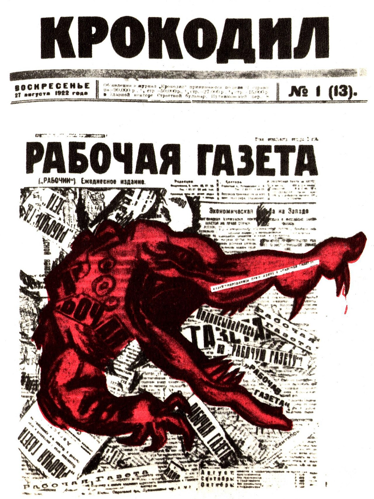
Красный крокодил прорвал полосу «Рабочей газеты» и стал лицом журнала. Так сатира обрела голос — и свои границы: ругай бюрократа, но систему не трогай.
Листай ряд пальцем справа налево: двенадцать обложек с 1922 по 1927 год — красный крокодил меняет маску, но остаётся лицом журнала. 12 обложек

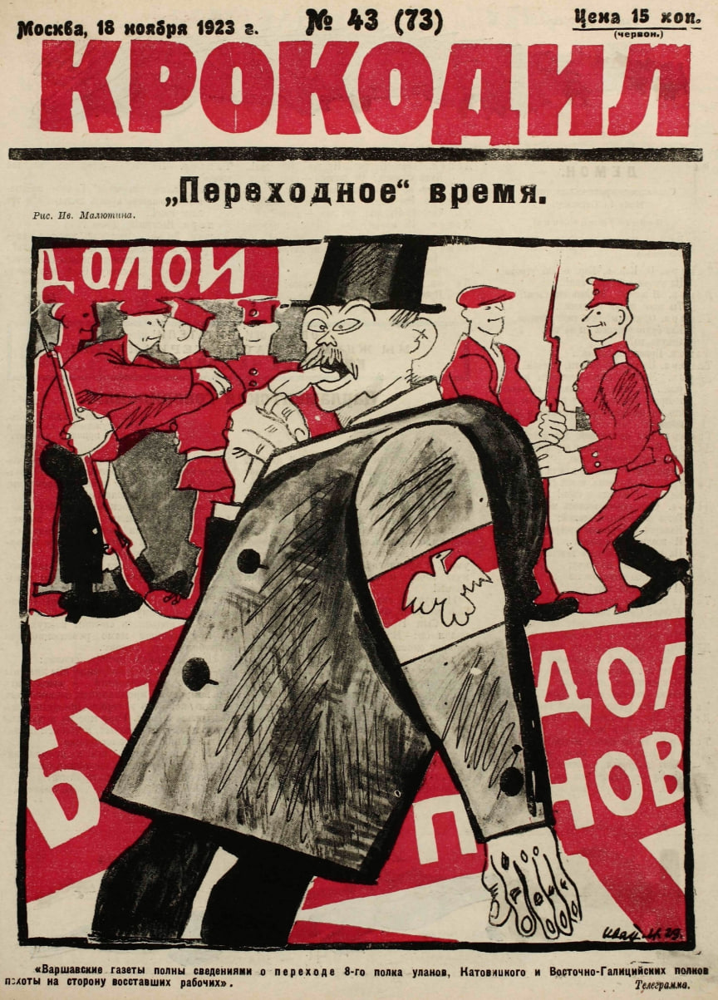
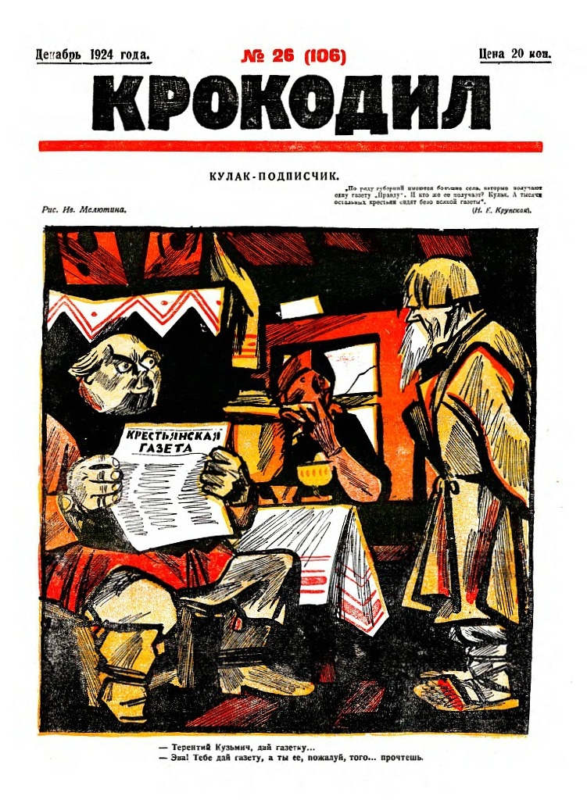
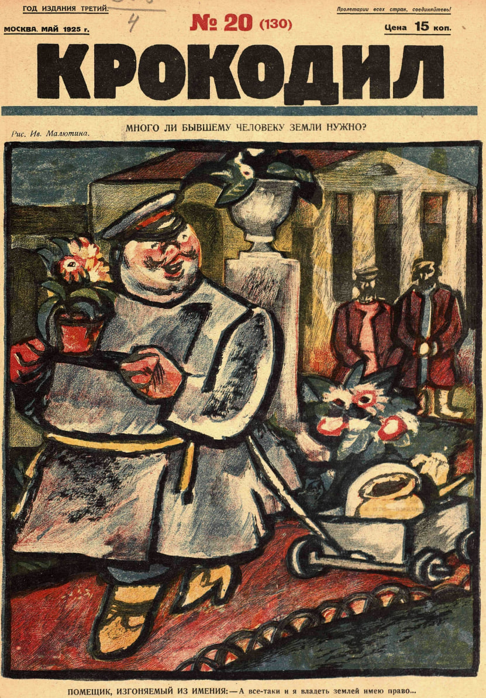
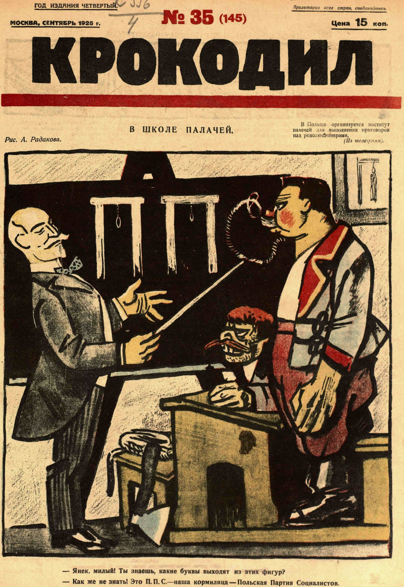
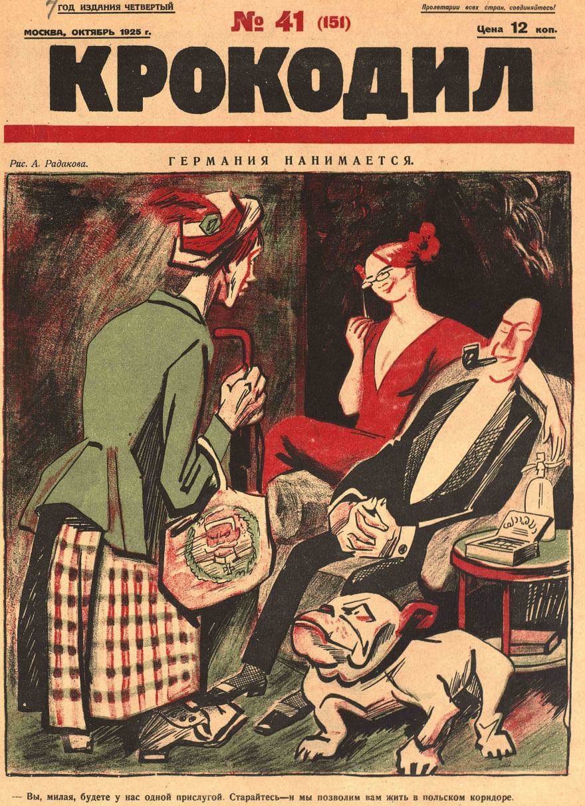
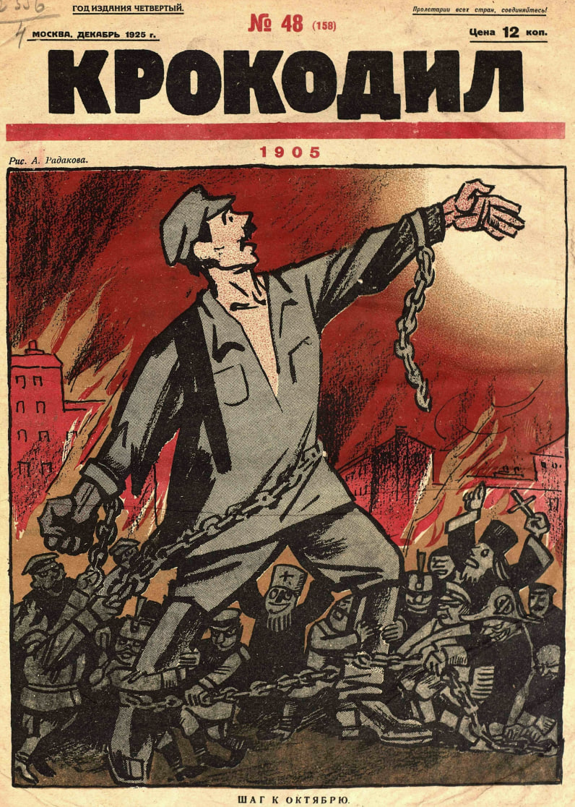
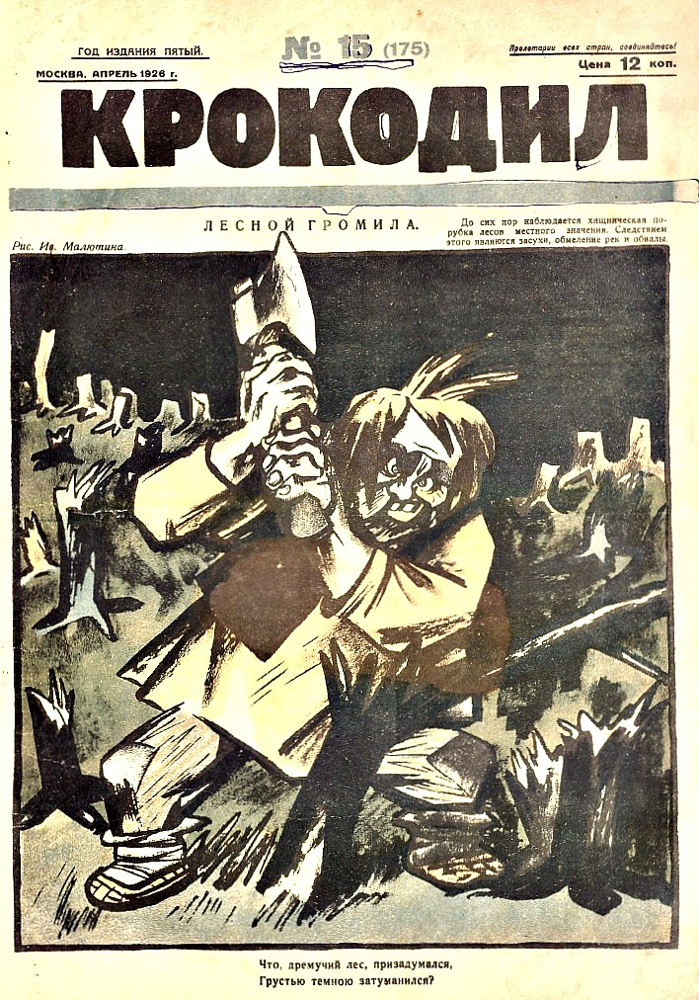
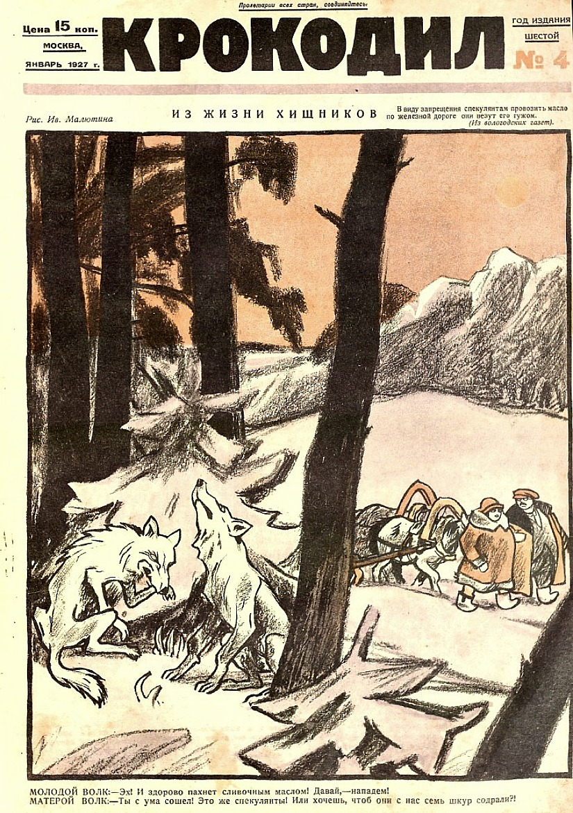
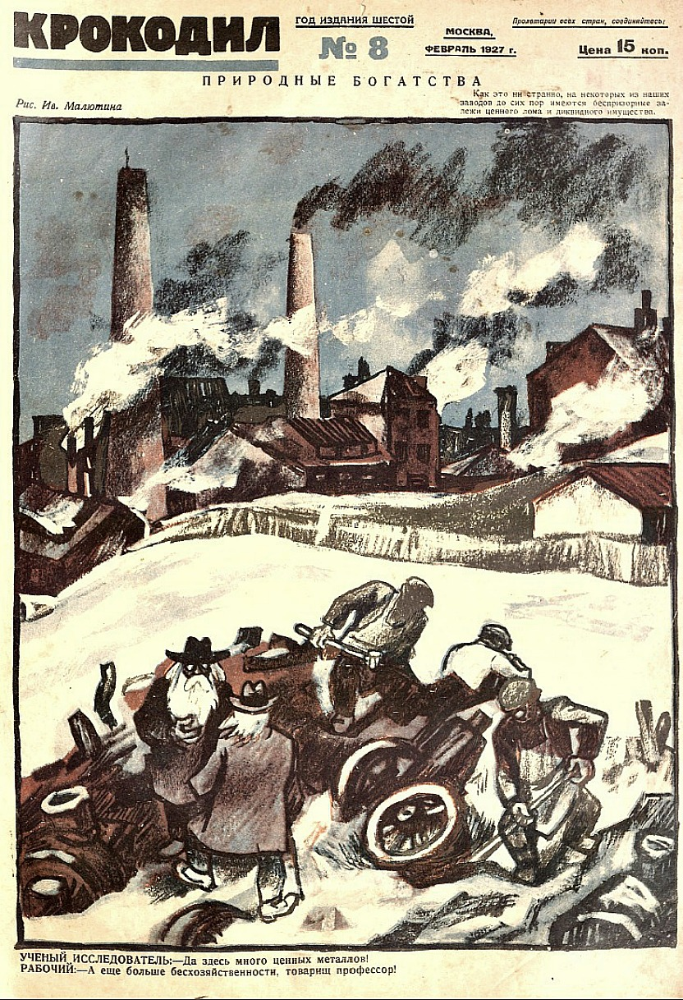
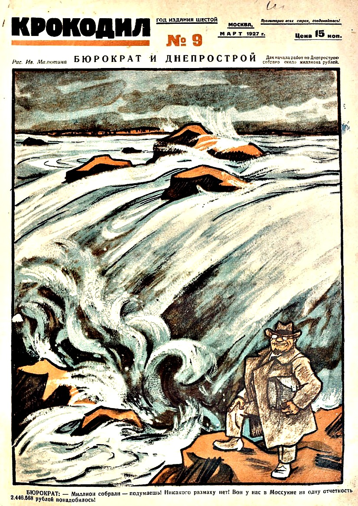
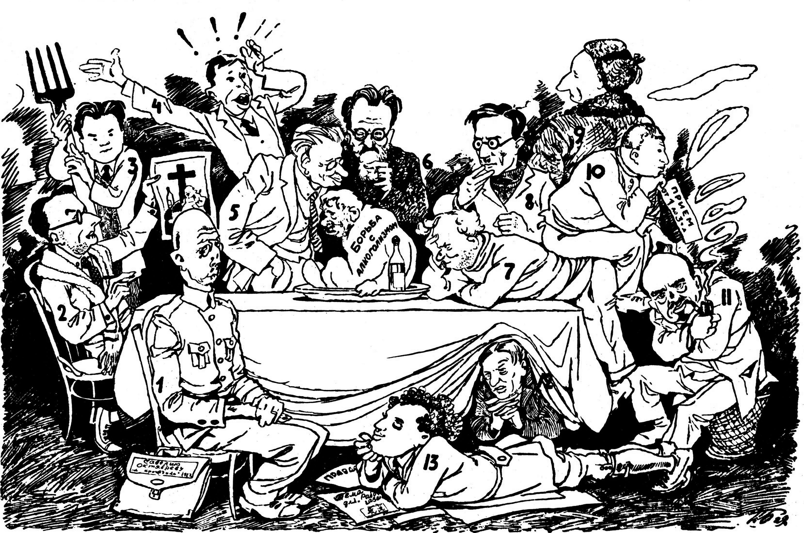
Держатель фотографии и точные подписи сверяются по каталогу на финальном факт-чеке.
Выбери три темы, которые «Крокодил» 1920-х мог напечатать в одном номере. Быт — можно, власть и вожди — под запретом.
Редакция «Крокодила» свободно высмеивала быт — бюрократа, бракодела, обывателя. Но личность вождей, партия и призывы против власти оставались под запретом: именно здесь проходила граница разрешённой критики.
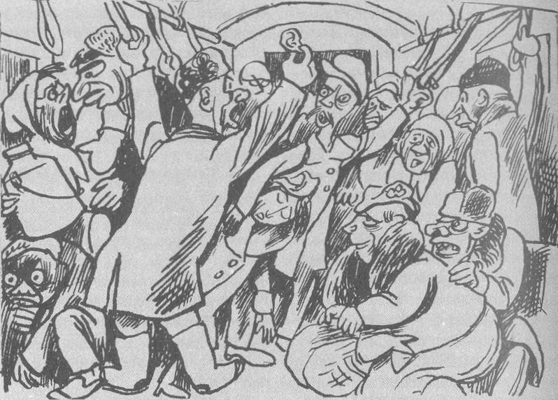
Карикатура — исторический оригинал журнала «Крокодил», публичное достояние.
Итог: 0/100 баллов. Заверши расследование и проверь себя.
Дата — номер музейного выпуска, а не годовщина события. Первые выпуски открыты; остальные страницы появятся по очереди.
Здесь разделены сам исторический предмет, музейная карточка и цифровой файл, показанный на странице. Все обложки и карикатуры — исторические оригиналы журнала в публичном достоянии; реконструкций и сгенерированных изображений на странице нет.
| Экспонат | Атрибуция предмета | Держатель и номер | Источник файла на странице | Правовой статус файла |
|---|---|---|---|---|
| «Крокодил» № 1 (13), 1922 | Обложка — Иван Малютин, 1922. | Президентская библиотека, карточка журнала | Файл на странице: media/krokodil-1922-no1.jpg. | Public Domain. |
| «Крокодил» № 1, 1922 | Обложка — Иван Малютин, 1922. | Президентская библиотека, карточка журнала | Файл на странице: media/krokodil-1922-i-nomer.jpg. | Public Domain. |
| «Крокодил» № 43, 1923 | Обложка — Иван Малютин, 1923. | Российская государственная библиотека, сводная запись журнала | Файл на странице: media/krokodil-1923-no43.jpg. | Public Domain. |
| «Крокодил» № 26, 1924 | Обложка — Иван Малютин, 1924. | Российская государственная библиотека, сводная запись журнала | Файл на странице: media/krokodil-1924-no26.jpg. | Public Domain. |
| «Крокодил» № 20, 1925 | Обложка — Иван Малютин, 1925. | Российская государственная библиотека, сводная запись журнала | Файл на странице: media/krokodil-1925-no20.jpg. | Public Domain. |
| «Крокодил» № 35, 1925 | Обложка — Алексей Радаков (1877–1942), 1925. | Российская государственная библиотека, сводная запись журнала | Файл на странице: media/krokodil-1925-no35.jpg. | Public Domain. |
| «Крокодил» № 41, 1925 | Обложка — Алексей Радаков (1877–1942), 1925. | Российская государственная библиотека, сводная запись журнала | Файл на странице: media/krokodil-1925-no41.jpg. | Public Domain. |
| «Крокодил» № 48, 1925 | Обложка — Алексей Радаков (1877–1942), 1925. | Российская государственная библиотека, сводная запись журнала | Файл на странице: media/krokodil-1925-no48.jpg. | Public Domain. |
| «Крокодил» № 15, 1926 | Обложка — Иван Малютин, 1926. | Российская государственная библиотека, сводная запись журнала | Файл на странице: media/krokodil-1926-no15.jpg. | Public Domain. |
| «Крокодил» № 4, 1927 | Обложка — Иван Малютин, 1927. | Российская государственная библиотека, сводная запись журнала | Файл на странице: media/krokodil-1927-no04.jpg. | Public Domain. |
| «Крокодил» № 8, 1927 | Обложка — Иван Малютин, 1927. | Российская государственная библиотека, сводная запись журнала | Файл на странице: media/krokodil-1927-no08.jpg. | Public Domain. |
| «Крокодил» № 9, 1927 | Обложка — Иван Малютин, 1927. | Российская государственная библиотека, сводная запись журнала | Файл на странице: media/krokodil-1927-no09.jpg. | Public Domain. |
| Редакция «Крокодила», 1929 | Фотография — Пётр Белянин (1901–1936). | Wikimedia Commons, исторический скан | Файл на странице: media/krokodil-1929-redakciya.jpg. | Public Domain. |
| «Страшный сон москвича», 1934 | Карикатура — Алексей Радаков (1877–1942). | Wikimedia Commons, исторический скан | Файл на странице: media/krokodil-1934-strashny-son.jpg. | Public Domain. |
Маркировка музея: все изображения на странице — исторические оригиналы журнала в публичном достоянии. Реконструкций и сгенерированных изображений нет. Точные даты и атрибуция обложек сверяются по русским каталогам на этапе финального факт-чека.
Можно ли восстановить отношения между людьми, не зная ни одного имени?
Следующий выпуск готовитсяВернись в город-музей и выбери следующую историю русской цивилизации.